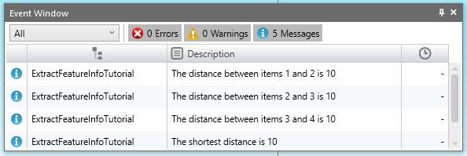

This tutorial shows how to extract information from a FeaturePtop object. Similar to collections, feature objects such as FeatureChain and FeaturePtop have a Count property and an Item. The Item for a FeaturePtop directly returns a Point object. The Count can be used to set up a loop then, and information can be gathered on each point.
The code below extracts the points from a chosen FeaturePtop, and finds the shortest and longest distances between two points in a FeaturePtop.
Before runing the code make sure you have one or more FeaturePtops in your ESPRIT EDGE file. Pick a FeaturePtop and the information for it will be displayed in the Output Window. If you want, you can confirm the information by smashing the FeaturePtop and placing dimensions between the points.
Tutorial outputs information to the EventWindow :
